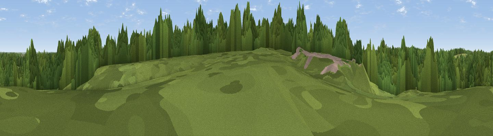

Spring Hill
#45994 in England · top 100% of its area beats it · near East EndThe view, rendered

A 360° render of this exact spot computed from the terrain model, tree cover and land cover — summer colours, afternoon light, calibrated against photographs of famous viewpoints. Real trees, hedges and buildings will differ in detail.
The panorama
Grey silhouette: terrain skyline in each direction (720 bearings, Earth curvature and refraction included). Dashed green: skyline with trees (+15 m) and buildings (+8 m) as obstacles. Blue strip: how far the ground is visible on each bearing.
Where the view opens
Wedge length = distance to the farthest visible ground on that bearing (vegetation-aware). Rings at 10, 25 and 50 km.
What fills the view
67% woodland · 30% grassland · 3% cropland
Angular shares of the visible panorama (visual magnitude), not map area. Landscape diversity 0.33 (0–1 Shannon).
Key numbers
More beautiful places nearby
The staircase of upgrades: each row has a higher view potential than everything closer. Driving times are estimates from straight-line distance, calibrated against real road routing — check an actual route before setting out.
| Place | Direction | Drive | Score |
|---|---|---|---|
| Monk's Hill | N · 6 km | ~12 min | 32.9 |
| Viewpoint near Iden Green | WSW · 7 km | ~14 min | 34.4 |
| Viewpoint near Iden Green | WSW · 7 km | ~15 min | 38.2 |
| Viewpoint near Cranbrook | WNW · 10 km | ~19 min | 41.0 |
| Viewpoint near Sponden | SW · 10 km | ~19 min | 45.9 |
| Viewpoint near Sissinghurst | WNW · 10 km | ~19 min | 48.1 |
| Viewpoint near Hartley | W · 10 km | ~19 min | 50.1 |
| Stocks Hill | SE · 10 km | ~19 min | 51.0 |
51.08702, 0.64965 · source: osm peak · position refined by local search. Computed location — check access rights before visiting.